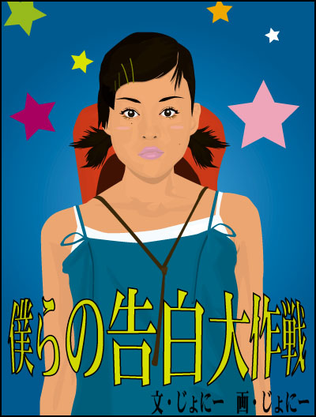

|
 文：じょにー 画：じょにー |
| 夏休み前の期末試験もなんとか乗りきったある日の放課後。 駅前のファーストフードの店で俺ら６人は夏休みの旅行の計画をたてていた。俺の名前は藤沢哲也（ふじさわてつや）、今年１７歳になった高校２年だ。来年には大学受験を控えている身分、両親は「勝負は今年から始まってるのよ！」とやかましく俺を駆り立てる。しかし俺は今、小学校からやってるサッカーで頭がいっぱいである。そりゃチームは県大会一回戦で負けちまうほどの弱小チームだが、俺は楽しくボールを追っかけてれれば、問題ないんだけどね。ちょっと話しがそれちまったけど、本人が認めなくても来年には受験という忙しい時期が訪れちまう。まあその前に最後の夏を満喫しようというのがこの計画の始まりだった。 っといってもこの計画には別の目的もあった。それはさっきから窓際でおもむろに外を見ている古城真由美（こじょうまゆみ）にある。俺はずっと彼女の事を思い続けている。子供の頃からサッカー馬鹿と呼ばれていた俺には、クラスいちの美少女である真由美に告白するなんてことは、初恋とはいえ大変なことなんだ。 「なぁ哲也きいてんのか？」 真由美の方をみていた俺にそう声をかけたのは、親友の井上智久（いのうえともひさ）である。俺は智久の事を「トモ」と呼んでいる。トモとは中学校のサッカークラブで知り合いそれ以来、２トップを組んでいた。俺が真由美に恋をしていることも知っており、今回の計画を発案したのも俺のことを思ってである。 「ああそれより洋二、宿泊するとこは確保できたのか。」 俺がそう言うと、トモの横に座っていた内田洋二（うちだようじ）がかけていた丸眼がねのフレームを持ち上げながら言った。 「任せてよ、パパの別荘のひとつを借りることにしたんだ。近くには温泉もあるし、女の子達も喜んでもらえると思うよ。」 洋二とはそれほど仲は良くなかったが、金持ちだし今回の計画には不可欠な人物だったのだ。小遣い程度の金しか持たない俺らには、満足に旅館すら宿泊できないのだ。俺とトモが洋二の事を気に入らない理由のひとつとして、すぐに女子の前で金持ちを自慢し、馴れ馴れしくする点である。やたらいろんな女にちょっかいをだしているという噂も流れている。もっとも俺らが知る洋二の彼女とは、いま洋二の前に座っているクラスメイトの前田麗子（まえだれいこ）だけだが。麗子は真由美とクラスでいちにを争う美少女だが、なぜか圧倒的に真由美のほうが男子生徒から人気がある。真由美はあまり男子生徒とは喋らず、おとなしいやら、しとやかやら、と秘密の花園的な魅力があると男子生徒達はかってに想像をふくらませる。そんな真由美の側にいつもいるのが、いまも真由美と麗子の間でチョコレートパフェを頬張っている緒川千香（おがわちか）である。真由美とは小学校からの親友らしく、どこにいくにも一緒らしい。千香は背が低くい上に、いつも子供っぽい振る舞いをしていることから、真由美の妹分的な存在なんだと思う。 「ねえねえ真由美ちゃん、水着買ったの？」 「うん千香はまだ買ってないの？」 「うん・・・真由美ちゃんこの後デパートつきあってよ。」 「いいよ。」 千香と真由美がそんな会話を繰り返しているのをみていると、こっちまで微笑ましくなってくる。普段あまり笑顔をみせない真由美の新しい魅力をみつけたようなそんな感じかな。 「んじゃそれで決定ね。」 トモが突然そう言った。 「えっ？」 「なんだよ哲也やっぱり聞いてなかったのか。」 「わりぃ」 みんなが大笑いしている中、俺が照れくさそうに頭をかいていると、真由美もこっちを向いてクスッと笑っていた。うっやっぱり可愛いと俺はこの時あらためて思った。 「明後日の８時４５分に新宿の高速バス停前に集合。切符は俺と哲也で用意しておく。」 「おおっわかったわかった。」 「よし、んじゃ解散だね。なあ麗子、いつもの店いこうぜ。」 洋二と麗子は、俺達４人を残して、店を出ていってしまった。 「ねえこの後どうする。」 トモがみんなにそう聞いた。 「私と千香は、デパートまで買い物いくから・・・。」 「んじゃ俺達もつき合うよ。なぁ哲也。」 「だーめ水着買いに行くんだから、男子禁制なの。」 千香が悪戯っぽくあっかんべーとすると、真由美と千香はトレイを片づけ店を出ていてしまった。 「おい哲也いっちまったぞ。お前がはっきりしないから。」 「そんなこというなよ。」 残された俺とトモはそれから告白の為の作戦を打ち合わせをして店を出た。作戦とはこうである。この旅行の最終日に海が見渡せる岬へみんなで行き、突然トモ達が姿を隠し、俺と真由美だけをその場に残す。そして俺が真由美に告白する。っとまあ単純だが、それが俺達に考えついた中で最高のシナリオだった。 次の日、成績表も渡され、とりあえず１学期が終了した。まあ成績はともかくとして、いよいよ夏休み突入である。帰宅後、俺は明日からの２泊３日の旅行に備え、荷物をスポーツバックに入れ準備をし、旅行に備え早く寝ることにした。 そして次の日の朝が来た。 昨晩早く寝たせいか、随分と朝早く起きてしまった。念入りに顔を洗い、歯を磨いた俺は、母ちゃんが用意してくれた朝飯を胃袋に放り込み、予定の時間より１時間も早く家を出た。まあバス停でまってりゃいいやと考えたのだ。もっとも旅行に・・・いや真由子へ告白することになる日が目前となっていて、すでに足が地に着かない心境だったのかもしれない。俺は重いスポーツバックを肩からかけ、駅に向かった。新宿駅までの切符を買い、ホームで登り電車を待っていたところで声をかけられた。 「あれっ藤沢くんどうしたの？」 俺が振り返ると、そこには緒川千香がいた。小さい体にやはり重そうなショルダーバックを下げてこっちに近寄ってきた。白のキャミソールの上にデニム生地のスリップワンピースを着込み、赤いカウボーイハットを背中に下げていた。そういえば女子クラスメイトの私服姿をみるのは今回が初めてだな。 「朝早く起きちゃったからさ。緒川は？」 「千香も遠足とか旅行は、朝早くおきちゃうんだよね。」 「ふぅーん。」 「電車は？」 「もうすぐ来ると思うよ。」 千香と俺は重い荷物をホームに置き、並んで電車を待った。そうそう千香は子供っぽい性格なためか、クラスのマスコット的な存在で男子生徒とも隔たりなくよく話しているのを見かける。教室のどこにいても千香の笑い声がよく聞こえてくるものだ。真由美と一緒にいるからついつい見比べてしまうが、真由美がクラス１の美少女なら、千香はクラス１のかわいさをもっている。ただし高校２年生ともなると、真由美みたいな大人びた女の子に人気は集中する傾向らしく、中学生とかわらない千香は男子生徒からそういう対象には観てもらえないらしい。いつもの学校の制服では少し背伸びしたような無理さがあるが、こういう私服だと活発な彼女の印象にマッチしておりよく似合っていると思う。 「ねぇねぇ来たよ。」 そんなことを考えていた俺の顔をのぞき込むように、千香がそう言うと新宿方面行きの上り電車が入ってきた。ドアが開き、俺と千香は電車に乗り込んだ。新宿までの２０分ほどの間、車中で千香がはしゃぐことはしゃぐこと。最初は俺も楽しかったが、まわりからの視線もあり、後半はただ聞くことに徹した。俺はそれとなく真由美の事を聞き出そうとしたが、千香の話しが要領を得ないためか、それとも俺の聞き方が悪かったのか、たいした事は何も聞けなかった。 窓の外には朝日に彩られた高層ビル群が姿を現し、新宿に近づくに連れ、車中も人混みが多くなってきた。やがて俺と千香を乗せた電車は新宿駅へと到着した。 「さ、降りるよ。」 俺は千香を引き連れ、人混みをかき分けてなんとかホームへ降り立つことができた。夏休みではないサラリーマンで構成された朝ラッシュのためか新宿駅はいまにもホームに投げ出されそうなぐらいの混み具合だった。 「大丈夫か、緒川？」 「大変だよ。」 「えっ？」 人混みをさけるようにして階段を探していた俺は、千香のほうを振り向いた。 「帽子がつぶれちゃったよ。」 千香は帽子のてっぺんが見事に凹んでしまったカウボーイハットを、俺の方へ見せた。ハァーただでさえ、このラッシュで大変なのに、いまそういうこと言うなよな。俺は千香のその言葉を無視して、再び階段を探した。それにしてもどうしてこう判りづらい作りをした駅なんだ。 「あっ、ほらあそこ！」 千香が指さした案内板には、高速バス停方面への出口を示す階段が記されていた。 「ほんとだ。」 結構注意深く探していたのに、あっさりと見つけるなんて・・・。 「へへーん、千香はね宝探し得意なんだよ。」 「宝・・・ね。」 俺はますます増加する人混みをかき分け、階段を降りていった。 「おい緒川気をつけろよ。」 「はーい。」 千香は相変わらず、カウボーイハットを直しながら俺の後に続いていた。やれやれホントにわかっているのかね。踊り場を越え、階段を下りきるまであと数段の所だった。後ろから突然悲鳴がした。 「うっ、うわっ！」 「なっなに？」 俺は千香のその悲鳴に振り返ろうとしたが、それより早く千香の身体が俺の背中にぶつかり、押される格好で俺と千香は階段下まで転げ落ちた。 ドシーン！ そんな擬音が似合う衝撃が俺の身体を貫いた。そして気が遠くなるのを俺は感じていた。 どれだけの間、気を失っていたのかは、すぐにはわからなかったが、たいした時間が過ぎたわけではなく俺は「大丈夫かい？」というサラリーマンの呼びかけで目を覚ました。 「あっ・・・はい。」 頭を打ったのか、少しまだ朦朧とするが別に身体は痛みを感じなかった。俺は上半身を起こし、まわりを見渡した。場所はさっきの階段下だったし、相変わらず階段にサラリーマンやＯＬが行列を作っている。 「気をつけないと駄目だよ。」 「はい。」 俺のことを呼びかけたサラリーマンはそう言うと自分も行列の中へと姿を消した。俺はとりあえず立ち上がり、千香を探した。しかしあたりに千香の姿はなかった。まさか俺のことをほっといてどっかに行ってしまったのか？それにしても朦朧としているせいか辺りの風景が・・・いや世の中が大きく見えた。そしてそのゆがんだ視界の中にとんでもないものが飛び込んできた。すぐ足下に誰か倒れていたのだ。最初はそれこそが千香かと思ったが、それは見間違えることのないオレ自身の姿だった。それは不思議な光景だった。俺が朝着込んだ白のＴシャツ、ジーンズパンツ、アウトドア用のショートブーツまさに俺と同じ格好だった。そこに倒れ俺を見上げるオレ、そしてそれを見下ろす俺。俺が２人いることになる・・・そんな非常識なこと。俺が声にもならないほどに狼狽えていると、もうひとりのオレがやはり上半身を起こした。 「あ、いててて・・・やっちゃった。あれ？」 ボーと俺の方をしばらく見つめ、俺の方を指さし声を上げた。 「なんで千香がもうひとりいるの？」 最初、このもうひとりのオレがなにを言っているのか判らなかった。しかしやがてある答えが俺の頭の中にわき上がってきた。俺のことを千香と指ささしたオレと、もうひとりのオレに千香と指さされた俺。俺はその答えを否定するべく視線を自分の身体にさげた。そしてそれを観た途端、俺は驚愕した。 俺は千香がさっきまで着込んでいたスリップワンピースを着ていたからだ。いやそれだけじゃあない胸元に視線を降ろすと、ワンピースの下にはキャミソールまで着込み胸も少し膨らんでいるように盛り上がっていた。とにかく身体に異変が起きていた。 「こっこれは・・・」 俺が言ったはずのその台詞も可愛らしい千香の声として聞こえた。つまり・・・いや信じがたい事だが、俺は一瞬にして緒川千香になってしまっているようだ。さっき世の中が大きくみえた理由にも気がついた。千香の身体は俺の身体より身長が２０センチ近くも違うのだ。つまり視点が違うわけだ。 「どうして・・・どうなってるのこれは？」 おかまみたいな喋り方をしたオレ、俺が千香の姿になっているということは、千香がオレの姿に・・・？ 「キミはその緒川千香なのか？」 「そうだけど、ワタシの姿をしているあなたは誰なのさ？」 「おっ俺は藤沢哲也だよ。」 「藤沢くん、でもなんで・・・こんなことに？」 「わかんないよ、とりあえず今わかっていることは俺達の身体が入れ替わっちゃったということだけだ。それより・・・。」 そこで俺と千香の２人は、周囲の視線に気がついた。俺達は人混み激しいこの階段下で交通の邪魔をしているばかりか、端から見れば男女が大声だして、まるで喧嘩しているようにも見えたのだろうか、嫌な視線を向けていた。 「とっ、とりあえず外に出よう。」 「うん」 俺はまだ豆鉄砲をくらったような表情をしているもうひとりのオレ・・・つまり千香の手を引っ張り改札に向かった。改札の前で俺が立ち止まり、もぞもぞとしているともうひとりのオレが問いかけてきた。 「なにしてるのさ？」 「切符は何処だ？」 俺達は身体と一緒に荷物も入れ替わっているから、切符のしまい場所がわかんなかったのだ。 「ポケットの財布の中だよ。」 「そうか、俺のはズボンのポケットに入ってる。」 俺達はそれぞれの切符を出し合い、改札を通り、とりあえずバス停の方へと向かった。俺の手に巻き付けられている女物の時計を見ると、まだみんながあつまるまで４０分ほどあったので、近くの喫茶店で落ち着くことにした。それにしても鏡で見慣れているとはいえ、自分と向き合って座るのは妙な気分になってくるモノだ。そして自分に視線をやると、女の子になっててこうしてスカートをはいているなんて・・・。 注意）文章表現を下記のようにします。以後お気をつけください。 ・心は藤沢哲也で身体は緒川千香 → 千香（＝俺） ・心は緒川千香で身体は藤沢哲也 → オレ（＝千香） 「ねぇ何にする？千香はオレンジジュース。」 「おい、ひとりで落ち着かないでくれよ。どういう状況かわかってるのか。」 身体が入れ替わるなんて、摩訶不思議な状況なのに、オレ（＝千香）は妙に落ち着いた表情で言った。 「だってジタバタしたってしょうがないよ。そのうち元に戻るよ。」 「なんでそんなことわかんだよ。根拠とかあるのか？」 「藤沢くんは男のくせにあんがい細かいんだね。」 「フツーはこうなの？落ち着いてる緒川のがおかしんだって。」 「そうかなー。とにかく前にこういう映画見たことあるのよね。確か神社の階段から落ちて・・・最後にもう一度落ちると元に戻るっていうやつだったかな。あの監督なんていうんだっけ？」 オレ（＝千香）は真剣に悩んだ表情をして、身を乗り出して千香（＝俺）に聞いてきた。 「どうでもいいだろ監督の名前なんて。けど・・確かに俺も前に見たことがあるな。」 「でしょ、結構簡単なことだよね。案外ＳＦって身近に存在するのさ。」 そんな簡単なことでコロコロと身体が入れ替わってたら、もっと世の中で騒ぎになってるだろうに、産まれてこのかた一度もそんなニュースや記事なんてみたことがない。それにしても前からそれほど悩むタイプとは思わなかったけど、ここまで楽観的とは。 「でももうすぐみんなあつまっちゃうぜ。このままじゃ旅行どころじゃ。」 「いいじゃん旅行中にでも元に戻るでしょ。一緒にいたほうが確率も高いわけだし。それにこのままのが面白いと思わない。」 いつも教室では子供っぽいことばかり喚いているが、もっともな事いうんだなと千香（＝俺）は思った。けどこの状況を面白いだなんて。急に男と女が入れ替わったっていうのに困惑っていう言葉を知らないんだろうか。 「はァ？お前何考えてるんだ？元に戻りたくないのか？」 「そりゃ元には戻りたいよ。でも決定的な方法はない以上、ジタバタしてもしょうがない。それならこの状況を楽しんでからでも遅くはない。違う？」 「けど・・・」 いや・・・待てよ。それも確かに一理あるな。それに今、俺が緒川千香ということは、真由美に接近するいいチャンスだ。千香になりすまして、いろいろと聞いておけば、告白する時にしやすいってもんだ。 「どう？」 「いいかもしんないな。」 「でしょ。あっウェイターさん、千香はオレンジジュース。」 千香（＝俺）はオレ（＝千香）がウェイターに言ったその台詞に思わず、吹き出しそうになった。 「なに？」 オレ（＝千香）は千香（＝俺）がウェイターにアイスコーヒーを告げた後に言った。 「いやとりあえず言葉使いをなんとかしなくちゃな。その姿で"千香"なんて言われた日にゃ気持ち悪いよ。」 真由美の前で女言葉で喋られた日には、告白どころかイメージダウンもいいとこだ。 「そっか・・・」 とりあえず俺達はみんなが来るまでの間、お互いの言葉遣いを憶えることにした。もっとも今まで１７年間それぞれ男と女として生きてきたのに簡単に言葉遣いをかえることなんてできっこなかった。まあ旅行に支障のないように、クセとそれぞれの呼び方だけをレッスンした。しかしオレ（＝千香）はもともと喋り方にクセがあったので、千香（＝俺）にとっては・・・いやオレ（＝千香）にとってもそれは大変なことだった。ポイントとしては、少し子供っぽい喋り方、自分の事を「千香」と呼び、真由美の事を「真由美ちゃん」と呼ぶということだった。真由美ちゃん・・・か、なんとも妙な気分だ。 そしてあっという間に待ち合わせの時間となり、千香（＝俺）とオレ（＝千香）はバス停に向かうことにした。バス停には既にみんなが集まっていた。 「遅いぞ哲也。お前が切符持ってるんだから先に来てろよな。」 某プロサッカーチームのユニフォームを着込んだトモがオレ（＝千香）に向かってそう言った。千香（＝俺）はオレ（＝千香）がどう答えるのか見守った。 「わりぃわりぃまよっちゃってさ。」 たいしたもんである。オレ（＝千香）はちゃんと男らしい振る舞いで、教えたとおりに、高速バスの切符を取り出しみんなに配りだした。千香（＝俺）に果たして"緒川千香"の真似ができるんだろうか。切符を持って、みんなでバスを待っていると突然千香（＝俺）の肩を誰かがたたいた。振り返るとそこには心配そうな顔をした真由美がいた。 「まっ・・・真由美・・・ちゃん。」 「おはよ千香。どうしたの元気ないの？」 コットン生地でできた真っ白なワンピースと麦藁帽に身を包んだ真由美は、いつも制服とまた違い・・・なんていうか・・・その天使のように綺麗だった。千香（＝俺）の心臓がドキンと高鳴った。 「そっ・・そっ・・そんなことない・・・よ。」 「そう？それならいいけど・・・。」 熱を計るかのように、真由美のきれいな手が千香（＝俺）のおでこにあてられた。やさしくあてられたその手はやわらかくて・・・あー天にも昇りそうだよ。 「だっ大丈夫さ・・いや大丈夫よ。」 これ以上触れてたら、パンクしちまいそうだった千香（＝俺）は真由美の手を額から離し言った。 「クスッ・・・変なの。」 千香（＝俺）はそのとき頬を赤らめ、高速バスが来るまでの間ずっと真由美の顔を見つめ続けていた。高速バスに乗り込んだ俺達は車中でもワイワイとすっかり盛り上がっていた。そして千香（＝俺）の横に座っているのは、トモなんかじゃなく真由美である。こんな急接近・・・ああ神様・・仏様ありがとう。 「なに感動しているの千香？」 「あっ・・なんでもない。」 「今日はずいぶんと変な娘ね。ほら食べて・・・。」 真由美は千香（＝俺）にチョコポッキーを差し出してくれた。千香（＝俺）はそれを受け取り、口に含んだ。この身体が甘い物好きなんだろうか、いつもより余計に甘く感じる。 「ありがとう・・その真由美ちゃん。」 「よかった千香好きだもんねチョコポッキー。」 真由美がやさしく微笑んだ。 「うん大好き。ありがとう真由美ちゃん。」 千香（＝俺）は調子に乗ってか、思わず真由美の手を握りしめてしまった。 「やだ千香ったら・・・」 「あはは・・・」 さすがに調子に乗りすぎたかな。・・・でっでも手を握ってしまった。いっそこのまま元に戻らなくてもいいかも。千香（＝俺）はこの時、そう考えていた。 「そうそう、あっちにはいい温泉があるんだって。」 「へ、へぇ〜」 温泉！そうだ・・・千香（＝俺）は今、女なんだから、公然と女風呂に入れるんだ。洋二に混浴ではないと聞き、この前までトモと嘆いていたが、誰にも文句言われずに真由美と一緒の温泉に入れるなんて・・・。千香（＝俺）は思わず真由美の入浴シーンを想像していた。 「どうしたの千香！」 「えっ」 「だって鼻血でてるわよ。」 「うそっ」 「ほら上向いて、チョコポッキーの食べ過ぎよ。」 千香（＝俺）が上を向いていると、真由美はティッシュをポケットから取り出し、千香（＝俺）の鼻から流れる鼻血をふき取ってくれた。 「あはは・・・」 まさかＨな事を考えてたなんて言えるわけがない。すっかり告白の事なんか忘れた千香（＝俺）は別の期待感に胸を躍らせながら、道中真由美との会話を楽しんだ。オレ（＝千香）のほうをみると、トモと並んで座り、それなりに楽しくやっているようだ。 「どうしたんだよ哲也。ずいぶんとはしゃいでるじゃないか。」 「へへーん。いろいろとね・・・。」 そんなトモの質問にも適当に答えているようだ。洋二と麗子も２人でなんか仲良くやっているし、それぞれの想いを胸に高速バスは一路、洋二の別荘へと向かっていた。 別荘近くの停車場で高速バスを降りた俺達はタクシーで洋二の別荘まで向かった。別荘は海が近いこともあって、半分開けた窓からどことなくいい匂いが漂う風が千香（＝俺）の頬や髪を気持ちよく撫でていく。なんかこう自然とロマンチックな気分になってくる。 「あっ、ほら千香！海が見えるよ！！」 「えっ何処？」 窓の外の並木の隙間から青い海がその姿を現し始めていた。晴れ渡った空を彩る積み雲と青い海、となりには大好きな女の子、楽しい旅行とくりゃ最高の夏休みってもんだ。千香（＝俺）と真由美はタクシーの中でも終始大はしゃぎしていた。 そして別荘に到着したのは、昼の１時をまわっていた。別荘は洒落た作りをしており、キッチンや居間を含んだ２階まで吹き抜けの大部屋とそれぞれ小部屋が３つで構成されていた。洋二と麗子、オレ（＝千香）とトモ、千香（＝俺）と真由美と２人ずつの部屋割りになった。部屋は備え付けられた窓から海が見渡せ、大きなダブルサイズのベットがひとつあった。千香（＝俺）は思わずゴクリと生唾を飲み込んだ。温泉だけじゃなくベットまで真由美と一緒なんて・・・。 荷物を置いた後、女子と男子と役割分担をし、男子グループは１年間眠っていた別荘の手入れをし、千香（＝俺）を含めた女子グループは昼飯の準備を開始した。もちろんカップラーメン以外作ったことのない千香（＝俺）にとって料理を作ることは至難の業であり、慌ただしく真由美や麗子の手伝いをするしかなかった。ハラペコになった男子グループが戻って来た頃にはすっかり真由美特製のリゾットとサラダがテーブルに並べられた。 「いただきまーす！」 俺達はハラペコだったこともあり、あっという間に全て平らげてしまった。もちろん味は申し分なかったが、なにより真由美の手料理を食べれただけで千香（＝俺）は幸せだった。 膨れた腹を休めながら、俺達はこのあとの事を相談した。もう３時を回っていたこともあり、海は明日にして、みんなで街までくりだすことにした。洋二と麗子は２人ででかけるということだったので、千香（＝俺）と真由美とオレ（＝千香）とトモの４人で出かけることになった。 オレ（＝千香）の提案で、動きづらく暑苦しいデニム生地のスリップワンピースを脱いだ千香（＝俺）は、自分の下着姿に恥ずかしがる暇もなく、赤のサブリナパンツをはき、白のコットンキャミソールとパンツとサンダルというすっかりカジュアルな格好で出かけた。海近くということもあり、街は肌を小麦色に焼いた若者でにぎわいをみせていた。俺達４人は、アイスキャンディーを片手にいろんな店を見て歩いた。 「あっ真由美ちゃん、花火だよ。」 花火を多く取りそろえた店で、オレ（＝千香）が真由美の腕を引っ張りそう言った。千香（＝俺）と真由美とトモは、オレ（＝千香）が発したその台詞に目を丸くした。 そりゃそうだ今"千香"は"オレ"であり「真由美ちゃん」だなんて慣れ慣れしくしないのである。真由美は突然オレ（＝千香）が馴れ馴れしくなり困った顔をし、トモはトモで突然オレ（＝千香）が大胆なアプローチをしたもんだから驚いているし・・・。「ちょっとちょっと」 千香（＝俺）はオレ（＝千香）のことを呼び小声で囁いた。 「えっ何さ？」 「お前いまオレだってこと忘れたのか？」 そこで思い出したのか、オレ（＝千香）は大きく開いた口を隠すようにして手をあてた。 「そっか・・・千香は今、藤沢くんだったんだよね。ついいつものようにしちゃったよ。」 「頼むぜ。ほら２人とも困った顔してるじゃないか。」 「うん気をつけるよ。それより藤沢くんも千香らしく振る舞ってよ。なんか千香らしくないってみんな言ってたよ。」 そうだ人のことを言えた義理じゃーない。やはり即席なためかついつい気がゆるんでしまう。 「なに２人でコソコソ話してるの？」 突然、千香（＝俺）とオレ（＝千香）のヒソヒソ話に真由美が割り込んできた。 「あっいや、ほら緒川・・・あっいや藤沢くんが私の真由美ちゃんに馴れ馴れしかったから文句いってた・・の・・よね。」 千香（＝俺）は必死に"千香"の喋り方を真似した。 「えっ？」 「うんそうなんだ。千香・・いやボクさ少しうかれちゃって・・ハハ。」 「ふぅーん。」 真由美は俺達のやりとりを首を傾げ見ていたが、なんとかその場を繕った。それにしても他人の真似をするっていうのは大変だな。俺達はその店で両手いっぱいの花火を買い、店をでた。ふたたびいくつか店を見て歩いている最中、千香（＝俺）はいつもの"千香"らしく飛びはねはしゃぎまくった。なんか子供みたいですこし恥ずかしかったが、無邪気なこのほうが"千香"らしくみえるのかもしれない。そんな感じで３人の前ではしゃいでいて、ふと後ろを振り返ったら真由美の姿がなかった。いや真由美だけでなくオレ（＝千香）の姿もなかった。 「あれっ２人は？」 後ろを歩いていたトモにそう訪ねると、知らないという素振りをした。 「たぶんどこかの店をみてるんだよ。」 「えっじゃあ探さなきゃ。」 千香（＝俺）が引き返そうとしたら、トモが千香（＝俺）の腕を掴んだ。 「別荘も近いしさ、２人で帰ってくるよ。大丈夫だから俺達は俺達で散歩しようよ。」 「えっ・・・あっ、うん。」 トモとしては"俺"に気を使ったんたつもりだろうが"千香"と入れ替わっている以上、ホントの"俺"はここにいるわけだし、なんのメリットもなく、いつもつるんでいる中学校以来の親友と一緒にいることになるんだよ。まートモに説明するわけにもいかないし、仕方がないか。 千香（＝俺）は、仕方がなくトモと別荘の方へ向かって歩き出した。来た時と違い、トモがベラベラと喋り、千香（＝俺）はウンウンと相づちをうっていた。そんなやりとりがしばらく続き、別荘近くまで来たところで、トモが別荘近くのところで小さな社があるのを見つけ「行こう」と言って来た。まあいいかと千香（＝俺）はトモの後に続いた。階段を昇る途中で、トモがオレ（＝千香）の事を語りだした。 「千香ちゃん知ってる？」 「えっ？」 「哲也の奴、古城さんのことが好きなんだぜ。」 馬鹿だな・・・それを語っている相手が実は親友だとも知らずに・・・。千香（＝俺）は笑い出しそうになるのを堪えて、しらないふりをした。 「そうなの、藤沢くん背高くて格好いいし、真由美ちゃんにはお似合いかもね。」 どうも自分をよいしょするのは、変な感じだ。 「なんかさ、この旅行中で告白するとか言ってさ。」 トモの奴、告白することは誰にも言わないって約束したのに、聞いているのは"俺"自身とは言え、"千香"に話し出すなんて・・・。 「そう、うまくいくといいね。あの２人はお似合いだと思うよ。」 千香（＝俺）はそっけなく、そう答えた。 「でもね哲也の奴は、あれでいて度胸ないから俺は無理だと思うよ。」 くっそートモのやつ、言いたい放題いいやがって、殴ったろか！千香（＝俺）は見えないようにその小さな手で拳を握り、必死に堪えていた。 「トモ・・あっいや井上くんって友達の悪口いうのね・・・。千香、友達の悪口いう人嫌いだな。」 千香（＝俺）がそう言うと、トモは女の子にそう言われたのが答えたのか、情けない顔しやがった。クッククク・・・こりゃ面白れー！！千香（＝俺）は階段を登り切るまで、女の言葉という武器をつかってトモをチクチクとからかった。すっかり黙りこんだトモをよそに、千香（＝俺）はスキップで社を見て回っていた。人もあまり近寄らないらしいし、最終日に真由美に告白する場所としてここもいいかもな。 「さっ帰ろうか、真由美ちゃん達も帰ってるころだろうし。」 ひととおり社を下見した千香（＝俺）が昇ってきた階段を降りようとしたその時だった。グイッと腕を掴まれ、トモが千香（＝俺）を引き寄せた。 「えっ？」 そして目前にいきなりトモの顔が・・・いやタコみたいな唇が近づいたかと思いきや、こともあろうかその唇で千香（＝俺）の唇を塞いだ。つまり・・千香（＝俺）は親友にキスされた・・・ってことに！！ 「んっ・・・」 千香（＝俺）は必死に引き離そうとしたが、女の子の身体だからか、ちょっとやそっとの力じゃトモは引き離せなかった。千香（＝俺）は履いていたサンダルでおもいっきりトモの足を踏み込んだ。さすがにそれは堪えたのか、トモは痛みで千香（＝俺）のことを離した。 「馬鹿野郎、なっ・・なにすんだよ。」 千香（＝俺）は汚された唇を腕で擦るようにして拭い、トモに叫んだ。 「ゴメン・・・でも俺は千香ちゃんのことが好きだったんだ。」 トモは勢い任せか千香（＝俺）にそう言い放った。 「トモ・・・だってお前、そんなこと一言も言ってなかったじゃないか。」 そうだ。トモは自分が"千香"が好きだなんて一言も親友の"俺"に言った事なんてなかった。ただ"俺"の悩みを聞き、協力してくれてたと思っていたのに・・・。 「千香ちゃん、俺とつき合ってくれ！」 「ちっ近寄るな・・・お前とつきあえるわけないだろ。」 すっかり困惑していたのか千香（＝俺）は、トモをその場に残して社の階段必死に駆け下りていた。そして別荘近くまで来たところで、急に走る気力がなくなった。気がつくと千香（＝俺）のパッチリとした瞳から大粒の涙がポロポロと溢れだしていた。 「くっ・・止まれ、止まってくれよ。なんで俺がなかなくちゃならないんだ。」 千香（＝俺）は必死に腕でその涙を拭った。その腕にはさっきキスをされた時に唇を力一杯拭ったせいか、ピンクの口紅がすれて残っていた。 「くそっ・・・トモの奴。」 それを消そうと手で擦りながら千香（＝俺）は気分を落ち着かせた。千香（＝俺）の今の気持ちを表すかのように、それは綺麗に消し去ることはできなかったが、目立たない程度まで消えたところで、別荘へと戻ることにした。 別荘に戻ると真由美もオレ（＝千香）もそしてトモも既に帰ってきていた。千香（＝俺）はなんとか何事もなかったように繕って、"千香"を演じることに徹していたが、さっきみたいに大はしゃぎする気分にはならなかった。そしてトモとも目を合わせることはできなかった。そうそう後でわかったことなんだけど、オレ（＝千香）と真由美が店を覗いている間に、トモはわざと千香（＝俺）にそれを伝えずに２人と引き離したようだ。トモ自身もこの旅行で"千香"に告白することを計画していたんだと思う。 晩飯の手伝いをし、みんなで食卓を食べ終えたところで、真由美から風呂に入ることを勧められた。確かに慣れない身体ではしゃいだもんだから、身体はクタクタだったし、足も棒のようになっていた千香（＝俺）は"千香"のショルダーバックからパジャマを取り出し、脱衣所へ向かう途中、みんなの目を盗み現れたオレ（＝千香）に呼び止められた。そして千香（＝俺）とオレ（＝千香）は２人で脱衣所に隠れるようにして入り、鍵をかけ、小声で密会した。 「なんだよ大丈夫だよ。なるべく見ないようにするからさ。」 「違うよ。ってまあそりゃ見られることも心配だけど、身体を綺麗にしといてもらわなきゃ困るし。それより井上くんとなんかあったの？」 「・・・どうして？」 「だって帰ってきてから変だし、井上くんは井上くんで何も喋らないしさ。」 「キスされた。」 こんなこと話すべきではないかもしれないが、この身体はもともと"千香"のものだし、勝手にキスされたのを知らせないのもかわいそうだと考えたからだ。 「そう・・・されちゃったんだ。千香のファーストキス。」 ファーストキス・・・そうか女の子は大事にしているというファーストキスを千香（＝俺）はトモと・・・しかも本人のしらないところで・・・。んっ待てよ！"俺"もまだキスしたことがない。あのキスは"千香"のファーストキスだったんだろうか、それとも"俺"のだったんだろうか。あーややこしくなってきた。 「ゴメン・・・。」 「いいよ藤沢くんが悪いわけじゃないし。」 「いや・・・その後でつき合ってくれって言われたが、断っちゃったんだ。後先のこと考えなかったけど、もしかして緒川が井上のことを好きだったんなら・・・。」 「ううん、井上くんの気持ちはうれしいけど、千香は別に好きな人かいるから。」 千香（＝俺）は内心ホッとした。仮にもこの身体は他人のモノなんだし、借りている間に人の恋路まで邪魔することは許されたものじゃない。 「よかった。とりあえず周りをあまり傷つけないうちに元に戻らなきゃな。」 「・・・」 オレ（＝千香）はすこしの間沈黙していた。 「どうした。」 「ううん、なんでもないよ。まあ自分達でどうにかなるわけじゃないけど、対応には気をつけないとね。」 「ああ。」 千香（＝俺）はコクリと頷いた。 「んじゃ千香はいくけど、あまりジロジロとみちゃ駄目だよ。」 「わかってるって・・・。」 オレ（＝千香）は扉の外の様子を伺うと、 「あと下着は新しいのに履き替えてよ。」 と言い残し脱衣所を出ていった。千香（＝俺）はいちど部屋まで戻り、下着を脱衣所に持ち込んだ。なるべく見ないとは言ったものの、ホントに脱いじゃっていいんだろうか。そりゃＨなビデオで見たことはあるけど、生でみちまうわけだろ・・・いいのかな？いやオレ（＝千香）も綺麗にするために仕方がないって言ってたじゃないか。それにせっかく女になったんだもん、みなきゃー男子失格だよ（もっとも今は女だけど・・・）。 「うん・・・よし脱ぐぞ。」 千香（＝俺）はキャミソールとサブリナパンツを脱ぎ捨てた。脱衣所にかけられた姿見には、ブラジャーとパンティだけとなった千香（＝俺）が映っていた。次はいよいよブラジャーを・・・。 「えっとーあれっ？どうやって外すんだ。」 確かどこかに留め金が・・・あった！ホックは背中の所にあるようだ。 「んっ・・それ・・あれっ・・・うまく外れないな。」 腕を後ろに回し、ブラジャーのホックを外そうと試みたがこれがなかなか上手く外れない。やっとのことでホックを外した千香（＝俺）は、肩から外した。パサッと床に落ちたブラジャーを籠にいれ、ゆっくりと姿見に映った自分の姿に目をやった。以前、男子生徒の間で女子生徒の身体の話題について盛り上がったことがあるが、そのときにもあがったように"千香"は真由美や他の女子生徒と比べると同じ高校生とは思えないほど発育が遅れているようだ。計り方はよくわからないが、Ａカップぐらいだろうか・・・すっぽり手に収まってしまうほどの女子中学生ぐらいの乳房がそこに備わっていた。自分の姿に欲情したのか、頬は赤く染まり、カァーと頭に血がのぼっているようだった。そして気がつくと鼻血がツーとでていた。 「うっ・・・また・・・」 なんともなさけない姿だ。千香（＝俺）はティッシュで鼻血をふき取り、パンティを脱ぎ、タオルで前を隠し、浴室へと入った。そりゃ下も興味があったが、これ以上刺激を受けたら、出血多量で倒れちまう。 なるべく見ないようにして、身体と肩ほどの髪をゴシゴシと洗った。 「へー女の子の肌ってスベスベしてるんだなぁ。それになんかプニプニと柔らかいし。うっ！！」 いかんいかん・・・また鼻血が出ちまう。千香（＝俺）は湯船につかって気分を落ち着かせた。ふと腕をみると、石鹸で身体を洗ったためか腕に残っていた口紅がほぼ消えていた。いきなりキスしたのは許せないとして、好きな女の子に告白した気持ちはわからなくもない。明日、トモと仲直りするか。 「よし」 千香（＝俺）はザバァーとお湯をまき散らし、湯船をでると浴室をあとにして、バスタオルで身体を拭き、水色と白のストライプのパジャマに着替えた。 頭を拭きながら、部屋に向かう途中、オレ（＝千香）がジーッと千香（＝俺）の方を見つめ、皮肉っぽく言った。 「ずいぶんと長い風呂だったね。」 「そっ・・そうかな？」 千香（＝俺）がそう返事したのを見ていた真由美がクスッとひとつ笑った。 「どう気持ちよかった？」 いつの間に用意していてくれた冷えたカルピスの入ったグラスを真由美が千香（＝俺）に手渡してくれた。 「はっ、はい・・・いや、うん。真由美ちゃんも入るといいよ。」 「そーね。んじゃはいろうかな。」 真由美が部屋から着替えなどを持ち出し脱衣所に消えたのをみて、オレ（＝千香）が近づいてきた。 「正直なとこどうなのよ？まさか・・・。」 オレ（＝千香）は目を細め、疑いの眼差しを向けた。 「違うよ。ちょっとだけ見ただけ。ホントさ。」 「ふぅーん、ならいいけどね。でも千香も藤沢くんの見ちゃうよ。」 オレ（＝千香）が恥ずかしげに頬を赤らめる。 「しょうがないさ。お互い様だし・・・。でもあんまし見るなよ。」 「うん。そーする。」 風呂上がりのカルピスを飲みながら、部屋のベットの上で慣れない長い髪を乾かしていると、突然部屋の戸が開いた。 「いいお風呂だったよ。」 風呂上がりの真由美が自分の髪をタオルでやさしく包むようにして入ってきた。湯上がりのせいかピンクのネグリジェの間からホンワリとした湯気が立ち上る。真由美は千香（＝俺）の後ろに腰掛けた。真由美の洗い立ての長い髪から漂うシャンプーの匂い。まともに真由美の顔なんかみれないぐらいにドキドキと心臓が高鳴っていた。 「明日の温泉は一緒に入ろうね千香。」 「えっ・・あっ・・・う、うん。」 千香（＝俺）はだらしないほどにニヤけた顔をして、そう返事をした。はぁー明日が待ち遠しいなぁー。なんて真由美との温泉シーンを妄想していたら、突然真由美が腕をまわし背中から抱きついてきた。 「えっ！？」 千香（＝俺）は慌てふためいた。だって背中にやわらかい感触が・・・これはまさしく真由美のオッパイ！！ 「どっどっ・どうしたの真由美・・・ちゃん？」 「千香が元気ないから・・・？」 真由美が小さな声でそう呟いた。 「俺・・・いや千香は、げっ・・元気だよ。」 千香（＝俺）の声は確かに震えていた。すると真由美がそのまま千香（＝俺）のパジャマの胸の真ん中あたり・・・つまり小さな胸の谷間あたりに細い手をそえた。 「ほらドキドキ言ってるよ。」 そりゃー外見は可愛い女の子でも中身はれっきとした男だもん。こんなおいしい状況・・・それにさっきから背中にあたってるこの感触・・・うー鼻血でそう。 「あっ！」 「えっ？」 「鼻血でた。」 またしてもツツーと鼻血がでていた。くそっなんでこういい時に鼻血ばっかでるんだこの身体は・・・！ 「大丈夫？」 真由美は千香（＝俺）から離れ、ティッシュを持ってきて鼻に詰めてくれた。 「ほら明日は海よ。早く寝よ。」 真由美はニッコリと笑い、仰向けになった千香（＝俺）に布団をかけてくれた。千香（＝俺）は改めて真由美のやさしさを噛みしめていた。こうなったら是が非でも告白してやるぞ！と"俺"は決意を固めた。そして数十分後、寝る支度ができた真由美がソッと布団の中に入ってきた。急接近どころか、いきなりひとつの布団で寝ることになるなんて・・・うー神様ありがとう。これか夢なら、一生さめなくていいかも・・・。 ＜後編に続く＞ |
|
あとがき／もともと「僕らの関係」の続編用に用意していたボツネタを、焼き直し短編として書き始めたのがこの作品です。ただしなんか面白くなってついつい長編になってしまいました。入れ替わりの原因が「オヤジ狩り」でも利用した"階段落ち"を使う辺りはワンパターンですが、全ては初心に戻ってという決心のもとなのでご容赦ください。さてと後編では、いよいよ旅も佳境に入り、海でのシーン、女風呂突入シーンなど見所は続く予定です。果たして主人公は無事告白し、ハッピーエンドになるんでしょうか。後編はそう遠くない（遅くても９月中旬）頃にはイラスト込みで公開できると思います。 お願い／イラスト描いてくれる人募集しています。描いてやるぞという方はjohny@geocities.co.jpまでメールをお寄せください。また作品内にて誤字脱字を見つけられた方は、こちらもjohny@geocities.co.jpまでメールしていただけると助かります。どうか宜しくお願いいたします。 |